Twenty-one protocols in four families, each with its reagents, its volumes, its timings and the places it broke on us. Everything here is written so another team can pick it up and run it without asking us a question.
SectionWet Lab
Written byWet lab
Last updated23 September 2026
StatusDraft, 16 fixes open
Contents
On this page
Overview
ReLeaf makes plant protectants in Bacillus subtilis and sprays them onto a plant that is under abiotic stress. Four families of bench work stand between that sentence and a number, and each one hands its product to the next.
Molecular cloning builds the constructs. Parts are amplified, cut, assembled by Golden Gate and moved into E. coli for storage and screening, then into B. subtilis by electroporation, which is where the protein has to be made. Recombinant protein production gets the protectant out of the culture: the cells are grown up, the secreted fraction and the lysate are taken separately, and what comes out is quantified and identified on a gel and a membrane. The plant protocols grow the test organism, Arabidopsis thaliana, on plates, in soil and in hydroponics, and apply a measured salt or heat dose to it. The functional assays read out what the stress did, by chlorophyll and by the phenotype the plate photographs record.
The chain matters more than any one link. A chlorophyll number means nothing unless the plants that produced it were stressed identically, which is why the plate protocols are written down to the seed spacing and the camera platform. A blot means nothing unless the lane came from a culture whose construct is verified, which is why the cloning protocols are written down to the digest that checks the assembly.
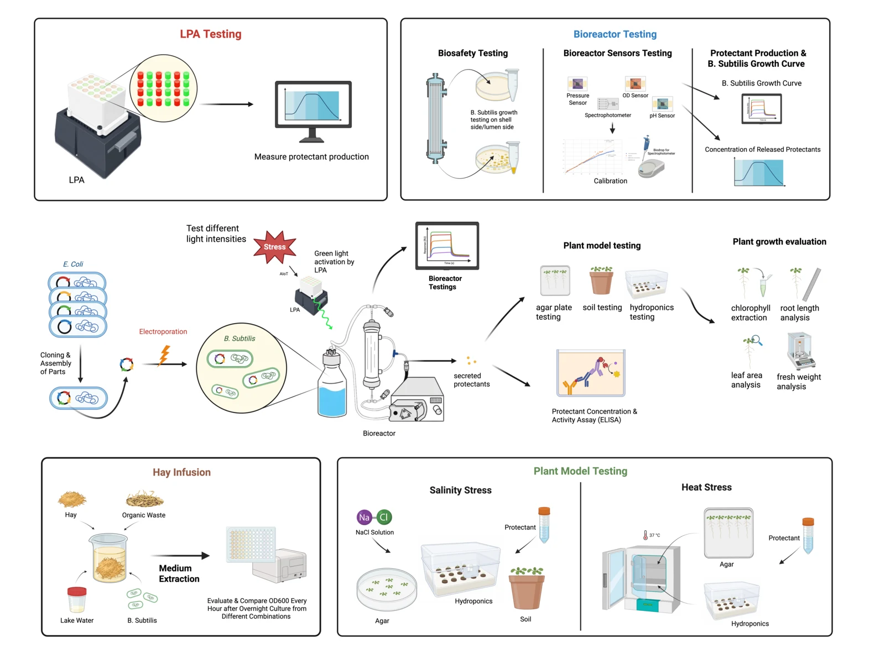
Figure 1. The experimental programme as it was planned. This page holds the protocols for the cloning arm, the protein arm and every box under plant model testing and plant growth evaluation. Three things in the diagram were never run and have no protocol here: the light plate apparatus induction test, the ELISA protectant activity assay and the hay infusion medium screen. One box under plant growth evaluation was declared and never filled: leaf area was experiment 7’s stated primary endpoint and not one row of the image-analysis template was ever completed, so no leaf area number exists. The bioreactor and photometer work has its own protocols on Hardware and Measurement.
The twenty-one protocols below are the ones with a written sheet. Where a protocol was written but no result on this wiki came out of it, its own entry says so, in the line marked Ran for.
Molecular cloning
Ten protocols, and they run as a loop. A part is amplified, assembled, transformed, screened by colony PCR, grown up overnight, miniprepped and then checked by digest on a gel. A failure at any of those steps sends the work back to the assembly reaction, and over the summer it did so often. The vectors are the pSTK set; which construct went into which backbone is on Parts.
Culture agar preparation
Pour the LB agar selection plates that every transformation, electroporation and colony PCR in this section is plated onto.
Bench time30 min, plus a 30 min autoclave and cooling
OutputRoughly ten 90 mm plates per 250 mL batch
Ran forEvery plate on this wiki
Materials
LB agar powder
ddH2O
Glycerol
500 mL flask, stir bar, magnetic stirrer
Antibiotic stock, one of:
Ampicillin, for level 1 constructs in E. coli
Chloramphenicol, for level 0 and level 2 constructs
Erythromycin, for B. subtilis
Procedure
Add 250 mL ddH2O, 9.25 g LB agar powder and 2 mL glycerol to a 500 mL flask.
Add a stir bar and stir until no powder is left undissolved.
Cover the flask with aluminium foil and stick an autoclave indicator on top.
Autoclave for 30 min.
Move the flask into the biosafety cabinet and let it cool to hand temperature. Stirring while it cools keeps it even.
Add 250 µL of antibiotic stock, which is a 1:1,000 dilution into the batch, and mix gently without raising bubbles.
Pour the plates and let them set flat in the cabinet.
Notes
Add the antibiotic too early and it is cooked; too late and the agar sets in the flask. Hand temperature on the outside of the glass is the usable signal.
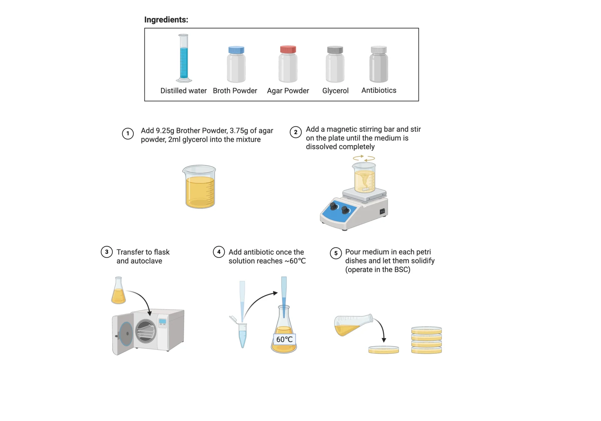
Figure 2. Culture agar preparation.
PCR amplification
Make working quantities of a part from a small template, for assembly or for a sizing check on a gel.
Bench time15 min set-up, 1.5 to 2.5 h cycling
Output50 µL of amplicon, loadable without added dye
Ran forEvery part on Parts
Materials
TaKaRa Ex Taq and 10× Ex Taq buffer
2.5 mM dNTP mix
Forward and reverse primer, 10 µM each
DNA template at 10 ng/µL
PCR-grade water
Thermal cycler
Reaction, 50 µL
Reagent
One reaction
10× Ex Taq buffer
5 µL
2.5 mM dNTP
4 µL
Forward primer, 10 µM
1 µL
Reverse primer, 10 µM
1 µL
Template, 10 ng/µL
2 µL
TaKaRa Ex Taq
0.25 µL
PCR-grade water
36.75 µL
Thermal cycle
Step
Temperature
Duration
Initial denaturation
98 °C
30 s
Denature, 25 cycles
98 °C
10 s
Anneal, 25 cycles
50 to 72 °C
30 s
Extend, 25 cycles
72 °C
1 min per kb
Final extension
72 °C
2 min
Notes
The annealing window is wide because it is set per primer pair from the primer melting temperature, not fixed for the protocol. Set it, write it in the notebook, and keep it with the gel image, or the band you get back cannot be explained later.
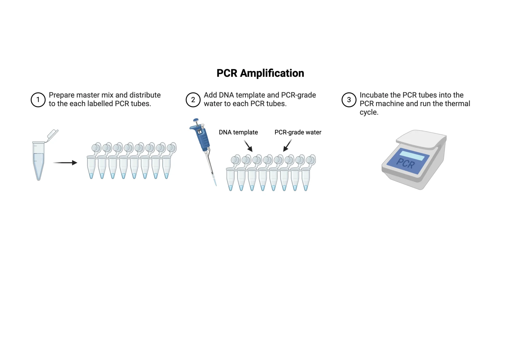
Figure 3. PCR amplification.
Restriction enzyme digestion
Linearise a miniprepped plasmid so its size can be read off a gel, which is the cheapest check that an assembly went in the way it was drawn.
Bench time10 min set-up, 1 h or more at 37 °C
Output20 µL of cut plasmid, ready to load
Ran forThe verification digests on Engineering
Materials
Target plasmid, concentration measured
Restriction enzyme at 20 units/µL
10× CutSmart buffer
Sterile ddH2O
Reaction, 20 µL, set up on ice
Reagent
Final amount
One reaction
10× CutSmart buffer
1×
2 µL
Restriction enzyme
20 units/µL
0.5 µL
Plasmid
500 ng
500 ÷ plasmid conc.
ddH2O
To 20 µL
20 − everything else
Notes
Volume of DNA in µL is the desired mass in ng divided by the measured concentration in ng/µL, with 500 ng as the target mass. A digest is only readable next to its own uncut control on the same gel, so set up a mock reaction with water in place of the enzyme every time.
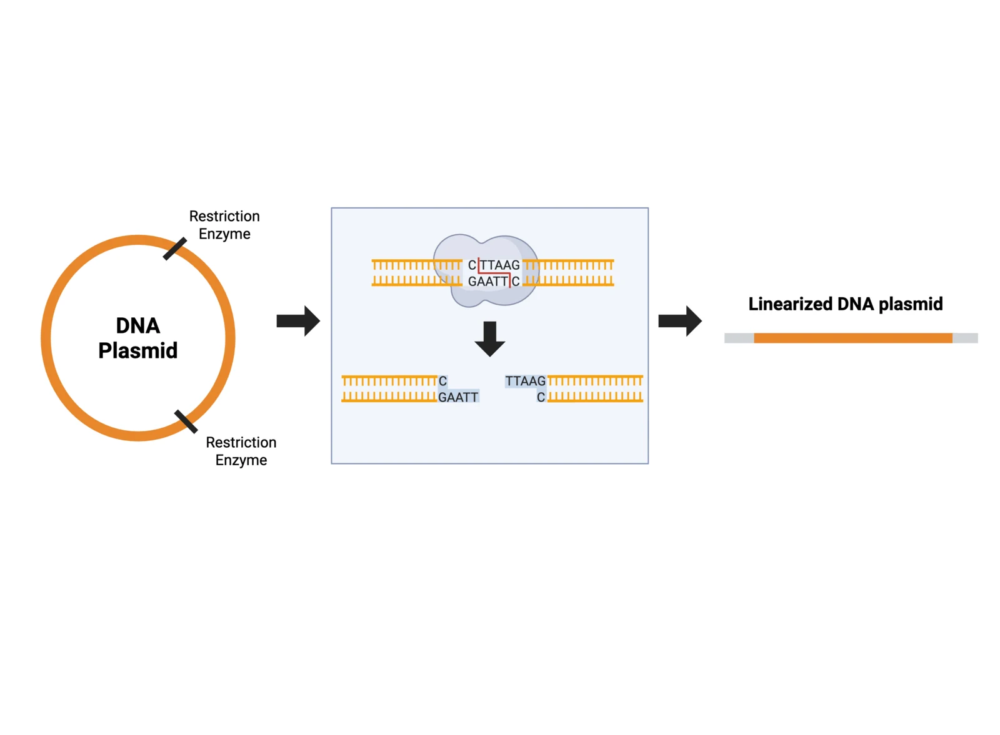
Figure 4. Restriction enzyme digestion.
DNA gel electrophoresis
Separate DNA by size so a PCR product, a colony PCR screen or a digest can be confirmed against a ladder.
Bench time25 min to cast and set, 30 min to run
OutputOne imaged gel
Ran forEvery gel figure on Engineering and Parts
Materials
Agarose powder
1× TAE buffer
BioGreen Safe DNA gel dye, 6×
Gel mould, tray, comb
Plastic wrap, microwave
DNA ladder, 1 kb or 3 kb
Casting the gel
Assemble the tray, comb and mould.
Weigh agarose powder for the concentration the fragment sizes call for.
Add 20 mL of 1× TAE to the flask and mix.
Cover with plastic wrap and poke four or five holes in it with a 1000 µL tip.
Microwave for 30 s, then swirl carefully.
Repeat until the agarose is fully dissolved and the solution is clear.
Remove the wrap and wait until it stops steaming.
Add the safe stain at 1:20,000 and pipette to mix.
Pour into the mould.
Pop surface bubbles with the pointed end of a 1000 µL tip, and sweep bubbles off the floor of the tray with the flat end.
Let it set at room temperature.
Loading and running
Prepare samples. A PCR product needs no added dye. A miniprep needs 1 µL of 6× dye to every 5 µL of DNA, mixed on parafilm.
Pour 1× TAE into the tank until it covers the gel.
Seat the gel in the tank.
Load 5 µL of ladder or sample per well. The ladder has to run past the largest fragment you expect.
Run at 100 V for 30 min.
Notes
The sheet says the appropriate amount of agarose without naming a percentage, and the gels actually run were not logged by percentage either. Anyone repeating a specific figure should read the percentage off the notebook entry for that date rather than assuming one. Stain goes in after the flask stops steaming; added to boiling agarose it degrades.
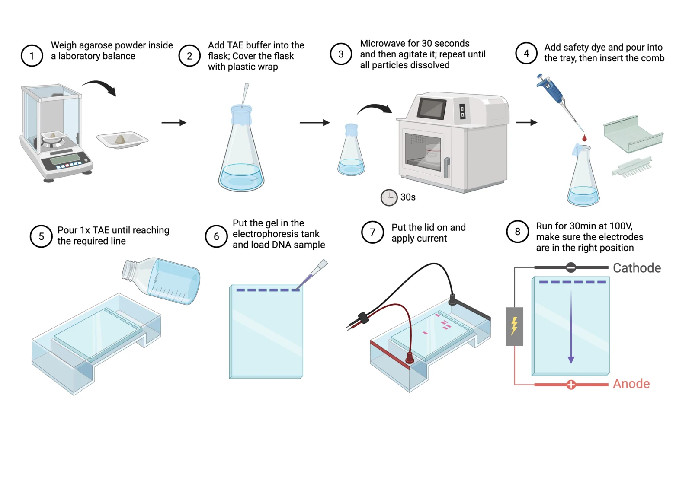
Figure 5. DNA gel electrophoresis, casting through imaging.
Golden Gate assembly
Join promoter, RBS, coding sequence and terminator into one transcriptional unit in a single tube, and join those units into multigene constructs.
Bench time20 min set-up, about 2 h cycling
Output20 µL reaction, transformed directly
Ran forLevel 0, level 1 and level 2 on Parts
Materials
Vector and insert plasmids, concentrations measured
T4 DNA ligase and 10× T4 ligase buffer
Type IIS enzyme chosen for the vector level: BsaI, BsaI-HF, BbsI or BsmBI
Sterile ddH2O, ice bucket
Reaction, 20 µL
Reagent
Volume
Vector, 10 fmol
calculated
Inserts, 20 fmol each
calculated
T4 DNA ligase
1 µL
10× T4 ligase buffer
2 µL
Type IIS enzyme
1 µL
ddH2O
20 − everything else
Thermal cycle
Stage
Temperature
Time
Cycles
Initial denaturation
95 °C
2 min
1
Denature
95 °C
30 s
30
Anneal
65 °C
40 s
30
Extend
72 °C
2 min 30 s
30
Final extension
72 °C
1 min
1
Vector and insert ratios
Vector to insert was run at 1:1, 1:2, 1:3, 1:5 and 1:7 depending on how many fragments were going in and how stubborn the assembly had been. Vector is held at 10 fmol and insert at 20 fmol per fragment for a standard four-part unit.
Notes
The enzyme follows the vector level, so check the backbone before you pick it. Which level used which enzyme and which antibiotic is in the Parts table. Level 2 assemblies on this project are junction-checked by colony PCR and digest, and they were never sequence-verified; do not read the two as the same thing.
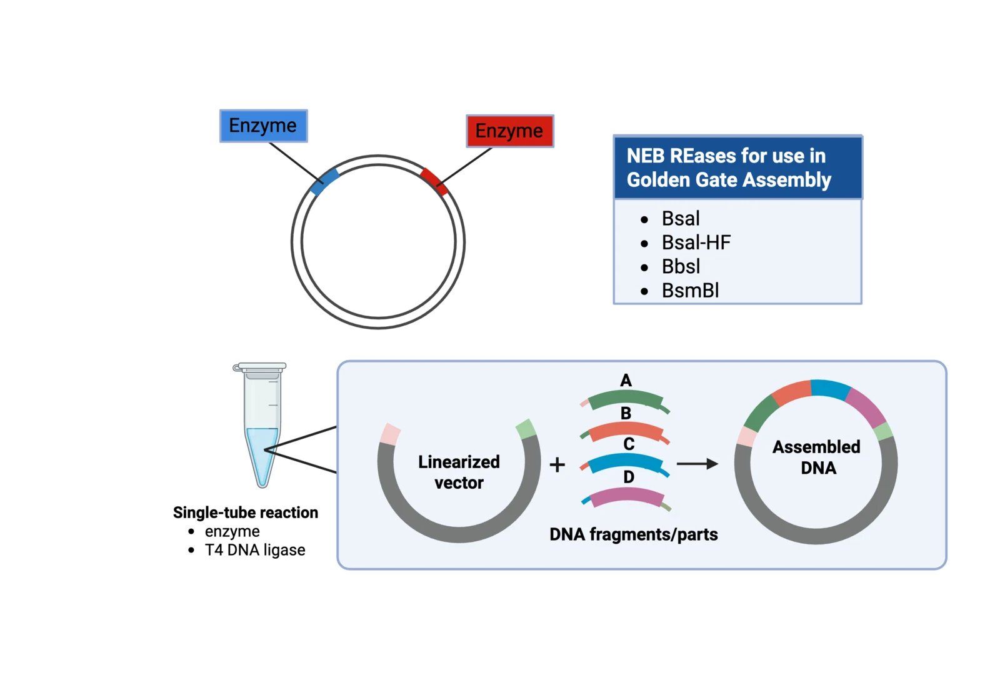
Figure 6. Golden Gate assembly.
E. coli transformation
Get assembled plasmid into chemically competent DH5α, where it is replicated, stored and screened before it goes anywhere near B. subtilis.
Bench time1 h 45 min at the bench, then 16 h overnight
OutputOne selection plate of colonies
Ran forEvery cloning step on Parts
Materials
DH5α chemically competent cells
Plasmid or assembly reaction
SOC medium, made from LB with 0.5 M sorbitol and 0.38 M mannitol
LB selection plates: ampicillin for level 1, chloramphenicol for levels 0 and 2
Water bath at 42 °C, ice bath, spreader, Bunsen burner
Procedure
Set the water bath to 42 °C and prepare an ice bath.
Pre-warm the selection plates at 37 °C.
Thaw competent cells on ice until half thawed, then add 10 µL of plasmid to 100 µL of cells.
Incubate on ice for 20 min.
Heat shock at 42 °C for 45 s.
Return to ice for 3 min.
Add 1 mL of SOC.
Recover for 1 h at 37 °C.
Centrifuge at 5,000 × g for 5 min.
Remove about 1 mL of supernatant and resuspend the pellet in what is left.
Spread on the plate.
Incubate at 37 °C for 16 h.
Notes
The 45 s heat shock is the step that punishes inattention. Cells that sit at 42 °C for a minute give a visibly worse plate. Concentrating the recovery into the last 100 µL is what makes a low-efficiency assembly readable, and it costs nothing.
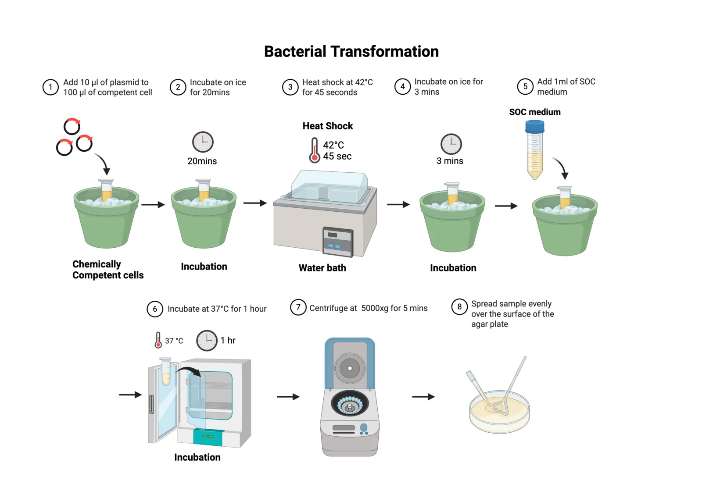
Figure 7. Chemical transformation into DH5α.
Electroporation into B. subtilis
Move a verified construct into the production organism, which does not take up plasmid by heat shock.
Bench timeCompetent cell prep 3 h; electroporation 30 min plus 3 h recovery
OutputSelection plate on erythromycin or chloramphenicol
Ran forStrain 168 only
Materials
B. subtilis 168 or WB800 overnight culture
Electroporation (EP) buffer, ice-cold; the WB800 version carries 0.5 mol/L trehalose
SOC recovery medium
0.2 cm electroporation cuvettes, pre-chilled
Bio-Rad Gene Pulser Xcell [6]
LB plates with erythromycin or chloramphenicol
Making electrocompetent cells, strain 168
Dilute the overnight culture 16-fold into growth medium.
Shake at 37 °C, 200 rpm, until OD600 reaches 0.85 to 0.95.
Chill on ice for 5 min.
Centrifuge at 5,000 × g for 10 min.
Discard the supernatant and wash the pellet twice with ice-cold EP buffer.
Resuspend in one twentieth of the original culture volume of EP buffer.
Aliquot into pre-chilled microcentrifuge tubes.
Store at −80 °C.
Making electrocompetent cells, strain WB800
Dilute the overnight culture 16-fold into growth medium.
Shake at 37 °C, 200 rpm, until OD600 reaches 2.2.
Chill on ice for 5 min.
Centrifuge at 5,000 × g for 10 min.
Wash the pellet four times with ice-cold EP buffer containing 0.5 mol/L trehalose.
Resuspend in one fortieth of the original culture volume.
Aliquot into pre-chilled tubes and store at −80 °C.
Electroporation
Pre-warm SOC recovery medium at 37 °C and pre-chill the 0.2 cm cuvettes.
Mix plasmid with 100 µL of electrocompetent cells in a 15 mL tube.
Set the pulser to the parameters in the table below.
Transfer the cell and DNA mixture to a cold cuvette and flick the suspension to the bottom.
Place the cuvette in the shock pod, close the lid, and wait for the beep, about one to two seconds.
Remove immediately and add 2 mL of SOC.
Record the delivered pulse parameters from the instrument.
Transfer to a culture tube and recover for 3 h at 37 °C, shaking at 200 rpm.
Centrifuge at 5,000 × g for 5 min.
Plate on selective LB and incubate at 37 °C overnight.
Setting
Strain 168
Strain WB800
Voltage
2.1, 2.2 or 2.3 kV
2.1, 2.3 or 2.5 kV
Resistance
300 Ω
250 Ω
Capacitance
25 µF
25 µF
Notes
The voltage is written as a list because it was swept, not chosen. Record the delivered pulse and the time constant for the tube that worked, since the setting on the dial and the energy that reached the cells are different numbers once the sample has any salt in it.
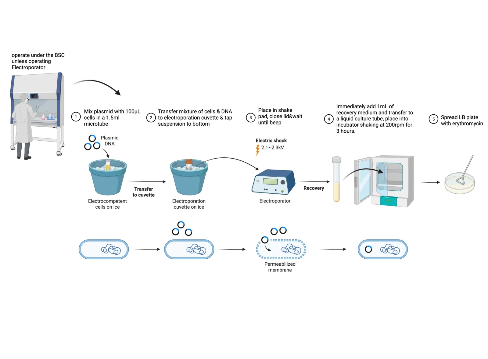
Figure 8. Electroporation into B. subtilis.
Colony PCR
Screen a plate of colonies for the insert before committing overnight cultures and miniprep columns to any of them.
Bench time30 min set-up, about 2 h cycling
OutputOne band per colony, read against a gridded patch plate
Ran forEvery screening panel on Engineering
Materials
Plate of colonies, and an empty selection plate to patch onto
Q-Amp 2× ScreeningFire Taq master mix
Forward and reverse primer, 10 µM
ddH2O, PCR strip tubes, thermal cycler
Reaction, 20 µL
Reagent
Final
Volume
Q-Amp 2× ScreeningFire Taq master mix
1×
10 µL
Forward primer, 10 µM
0.5 µM
1 µL
Reverse primer, 10 µM
0.5 µM
1 µL
ddH2O
–
8 µL
Procedure
Label the empty plate and draw a grid on it with one box per colony.
Make up the master mix for the number of colonies, plus one.
Pipette 20 µL into each PCR tube.
Touch a colony with a pipette tip.
Streak that tip onto its own grid box on the patch plate.
Drop the tip into the matching PCR tube.
Repeat for every colony.
Run the cycle below, then load the products on a gel.
Stage
Temperature
Time
Cycles
Initial denaturation
95 °C
2 min
1
Denature
95 °C
30 s
30
Anneal
65 °C
40 s
30
Extend
72 °C
2 min 30 s
30
Final extension
72 °C
1 min
1
Notes
The patch plate is the point of the protocol. A band on a gel is worthless if the colony it came from has been thrown away, and a grid drawn before you start is the only thing that survives a long screening session. Label the grid boxes with the same letters and numbers the gel lanes will carry.
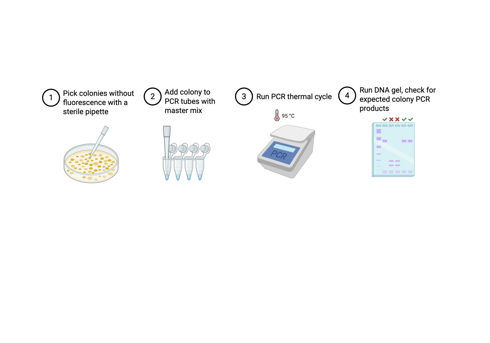
Figure 9. Colony PCR and the gridded patch plate.
Liquid bacterial culture
Grow a verified colony overnight, which is the input to every miniprep and every protein extraction on this page.
Bench time10 min, then 16 h overnight
Output3 mL of saturated culture per tube
Ran forEvery miniprep and extraction
Materials
Plate of screened colonies
TB medium
Antibiotic stock: ampicillin at 25 mg/mL, chloramphenicol, or erythromycin
Culture tubes, Bunsen burner, shaking incubator
Procedure
Label the culture tubes.
Add 3 mL of TB medium and antibiotic at 1:1,000 to each tube.
Touch a pipette tip to the chosen colony.
Drop the tip into the tube.
Incubate 16 h with the tube at a slant, which keeps the culture aerated.
Notes
TB, because the yield per tube is what limits a miniprep and LB gives visibly less. The slant matters more than it looks: a 3 mL culture standing upright in a 15 mL tube grows visibly worse.
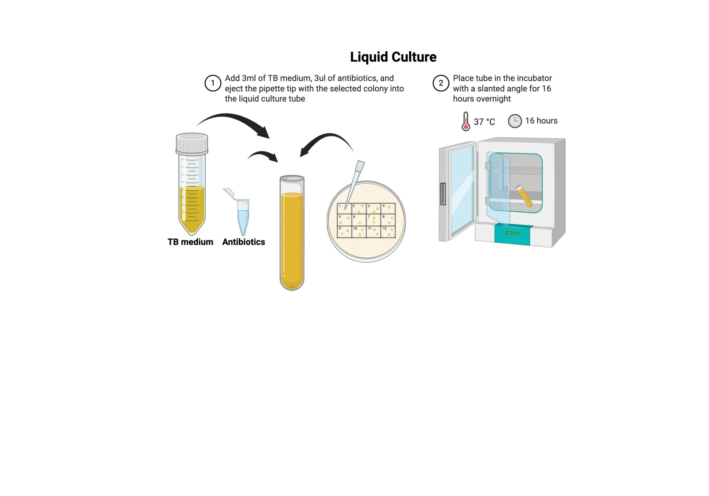
Figure 10. Liquid bacterial culture.
DNA isolation
Pull plasmid out of an overnight culture, measure it, and hand it to a digest, a sequencing submission or the next assembly.
Bench time1 h including the spectrophotometer
Output50 µL of eluted plasmid with concentration and purity ratios
Ran forEvery sequencing submission on Parts
Materials
Overnight bacterial culture
Viogene Mini Plus Plasmid DNA Extraction Kit [3]: MX1, MX2, MX3, WN and WS buffers, columns, elution buffer
Microcentrifuge
BioDrop spectrophotometer
Procedure
Transfer 1.8 mL of overnight culture into a 2 mL tube.
Centrifuge at 16,000 × g for 1 min and discard the supernatant.
Repeat until the whole culture has been pelleted into the same tube.
Add 200 µL of MX1 and resuspend the pellet completely by pipetting or vortexing.
Add 250 µL of MX2. Mix by inverting 8 to 10 times, never by vortexing.
Stand at room temperature for 2 min.
Add 350 µL of MX3 and invert immediately to mix.
Centrifuge at 16,000 × g for 5 min. Label the columns and collection tubes while it spins.
Transfer about 900 µL of supernatant to the column and spin at 7,000 × g for 30 s. Discard the flow-through.
Add 500 µL of WN, spin at 7,000 × g for 30 s, discard the flow-through.
Add 700 µL of WS, spin at 7,000 × g for 30 s, discard the flow-through.
Spin the empty column at 10,000 × g for 3 min to drive off residual ethanol.
Move the column into a clean 1.5 mL tube.
Add 50 µL of elution buffer to the centre of the membrane and stand for 3 min.
Centrifuge at 10,000 × g for 3 min.
On the BioDrop, clean the port with ddH2O, then ethanol, then ddH2O.
Blank on elution buffer.
Read concentration, A260/230 and A260/280, and write all three on the tube and in the notebook.
Clean the port again the same way.
Notes
The 3 min dry spin at step 12 is the step people skip, and carried ethanol is the commonest reason a clean-looking miniprep will not cut. The two purity ratios go on the tube, not only in the notebook: a sequencing reaction that comes back as noise is usually explained by a number that was already written down.
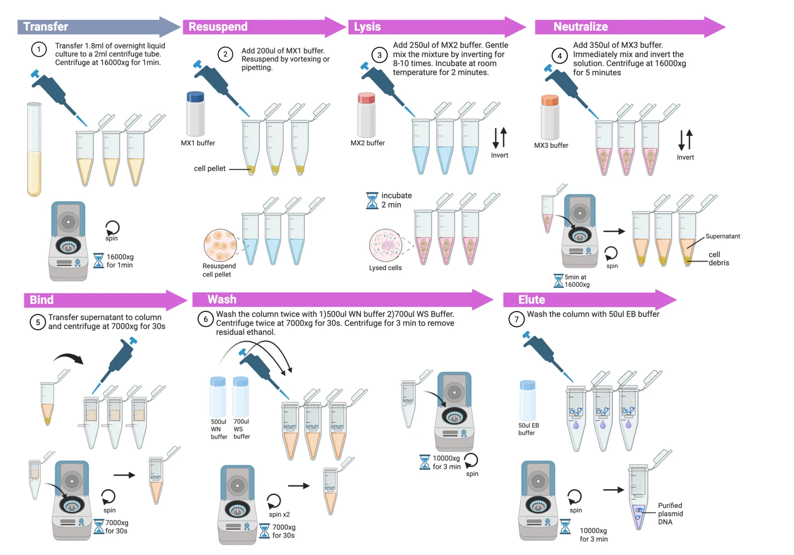
Figure 11. Plasmid isolation on the Viogene Mini Plus kit.
Recombinant protein production
Six protocols that take a verified B. subtilis strain and try to end up with an identified protein. The design is secretion: the cargo carries a SamyQ signal peptide so the protectant leaves the cell, which is why the supernatant and the pellet are harvested and analysed separately at both scales. The trial scale settles the lysis conditions; the large scale runs them at volume.
The record from this section is thin, and the page says so protocol by protocol. Three Western blots were run and the outcome is on Engineering. Bradford quantification, Ni-NTA purification and dialysis have written sheets and no result anywhere on this wiki.
Bradford protein assay
Put a concentration on a protein sample against a BSA standard curve, so that a gel lane can be loaded to a known mass.
Bench time40 min including the 5 to 10 min development
OutputConcentration in µg/mL from a fitted line
Ran forNo result on this wiki
Materials
Bradford reagent, Coomassie Brilliant Blue G-250 based
BSA stock at 2 mg/mL
ddH2O
Protein samples
96-well microplate and plate reader at 595 nm, or cuvettes and a spectrophotometer
BSA standard curve, 100 µL per point
Standard
BSA, µL
ddH2O, µL
600 µg/mL
30
70
500 µg/mL
25
75
400 µg/mL
20
80
300 µg/mL
15
85
200 µg/mL
10
90
100 µg/mL
5
95
Procedure
Dilute the 2 mg/mL BSA stock with ddH2O into the six standards above.
Dilute the protein samples with ddH2O so the expected concentration lands inside the 100 to 600 µg/mL range of the curve.
Add 100 µL of each standard to its own well, and include one well of 100 µL ddH2O as the blank.
Add 196 µL of Bradford reagent plus 4 µL of sample to each sample well. The blank gets Bradford reagent only.
Mix gently without raising bubbles, which read as absorbance.
Stand at room temperature for 5 to 10 min in the dark while the colour turns from brown to blue.
Read at 595 nm, zeroed on the water-only well.
Plot absorbance against known BSA concentration for the six standards and fit a straight line.
Read the unknowns off the fitted line.
Run standards and samples in duplicate or triplicate and average.
Notes
The sheet is complete and the assay was never run for any number that reaches this wiki. A team repeating it should treat the curve range as the first thing to check, because a supernatant from a secreting B. subtilis culture can land well below 100 µg/mL and fall off the bottom of this standard set.
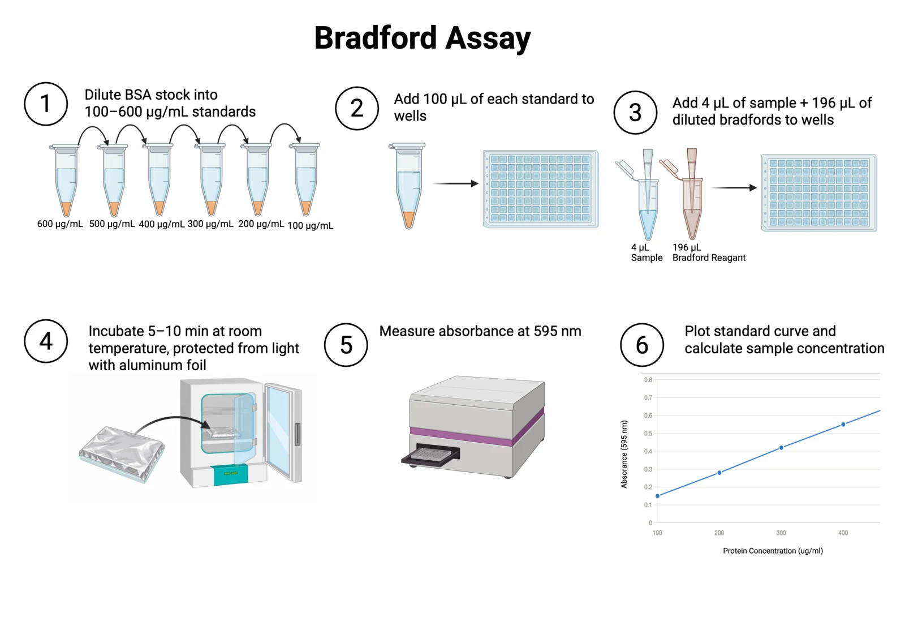
Figure 12. Bradford protein assay [2].
Trial scale protein extraction
Settle the lysis and clarification conditions on 5 to 50 mL before spending a 500 mL culture on them, and find out whether the cargo is in the medium or still inside the cell.
Bench time1 h 30 min, cold throughout
OutputClarified supernatant and a soluble lysate fraction
Ran forThe cultures behind the August blots
Materials
B. subtilis liquid culture, 5 to 50 mL
CelLytic B 10× concentrate
EDTA-free protease inhibitor
Centrifuge tubes sized to the culture, refrigerated centrifuge, vortex
Ice bucket or 4 °C access
Harvesting the supernatant
Centrifuge at 4,000 to 8,000 × g for 10 to 20 min at 4 °C to separate pellet from supernatant.
Keep both fractions.
Add EDTA-free protease inhibitor to the supernatant immediately.
Clarify again at 15,000 × g for 15 to 20 min at 4 °C.
Harvesting the cell pellet
Prepare a 10-fold dilution of CelLytic B 10× into the chosen buffer.
Grow a 10 mL culture under the normal induction conditions.
Take 1.5 mL of culture at OD600 0.5 to 1.0 per dilution condition and spin at full speed for 2 min. One tube per CelLytic B dilution.
Discard the medium and resuspend each pellet in 0.4 mL of its own CelLytic B dilution.
Vortex briefly, then mix for 5 to 10 min at room temperature so the detergent can pull out soluble protein.
Spin at full speed for 5 min to pellet insoluble material.
Separate the supernatant, which is the soluble fraction, from the pellet, which is the insoluble or inclusion body fraction.
Notes
Protease inhibitor goes in as soon as the supernatant is off the pellet, and the sample stays cold from there to the freezer. The whole point of running both halves is that the answer to where is the protein is a gel and not an assumption, and on this project the answer changed the plan more than once.
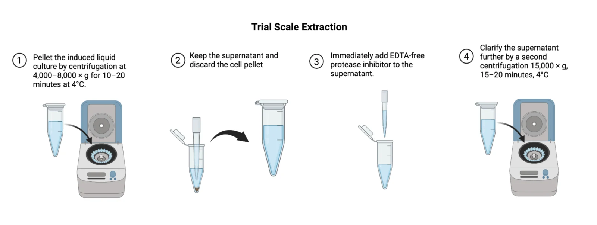
Figure 13. Trial scale, harvesting the secreted fraction.
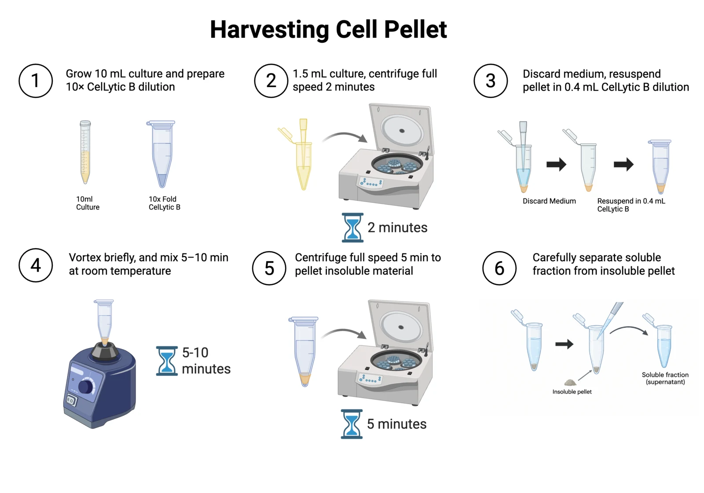
Figure 14. Trial scale, harvesting the cell pellet across CelLytic B dilutions.
Large scale protein extraction
Run the settled conditions on 100 to 500 mL of induced culture to make enough protein for purification and for a plant treatment.
Bench time2 h 30 min, cold throughout
OutputClarified supernatant and soluble lysate at volume
Ran forNo result on this wiki
Materials
B. subtilis liquid culture, 100 to 500 mL, induced
CelLytic B 10× concentrate [5]
Lysozyme, 10 mg/mL stock, at 20 µL per 1 mL of lysis buffer
EDTA-free protease inhibitor, 100× stock, at 10 µL per 1 mL of lysis buffer
DNase I, 20 mg/mL stock diluted 1:100 to a 200 µg/mL working stock, at 25 µL per 1 mL of lysis buffer
Refrigerated centrifuge, shaker, ice
Harvesting the supernatant
Pellet the induced culture at 4,000 to 8,000 × g for 10 to 20 min at 4 °C.
Keep the supernatant and discard the pellet.
Add EDTA-free protease inhibitor immediately.
Clarify at 15,000 × g for 15 to 20 min at 4 °C.
Harvesting the cell pellet
Harvest cells at 5,000 × g for 10 min and remove the spent medium.
Prepare a 10-fold dilution of CelLytic B 10× into the chosen buffer.
Add the diluted CelLytic B at 10 to 20 mL per gram of cell paste, pre-mixed with lysozyme and protease inhibitor at the ratios above, and resuspend fully. One gram of wet paste is about 250 mL of culture at OD600 2.0.
Shake at room temperature for 10 to 15 min.
Add DNase I working stock at the ratio above and mix briefly to cut the viscosity before spinning.
Centrifuge at 16,000 × g for 10 min to pellet insoluble material.
Collect the supernatant as the soluble fraction.
Run supernatant and pellet on SDS-PAGE and a blot to confirm where the target ended up.
Notes
Skip the DNase and the lysate becomes a string that will not pipette and will not pellet cleanly. No blot or purified protein on this wiki traces back to a large scale run.
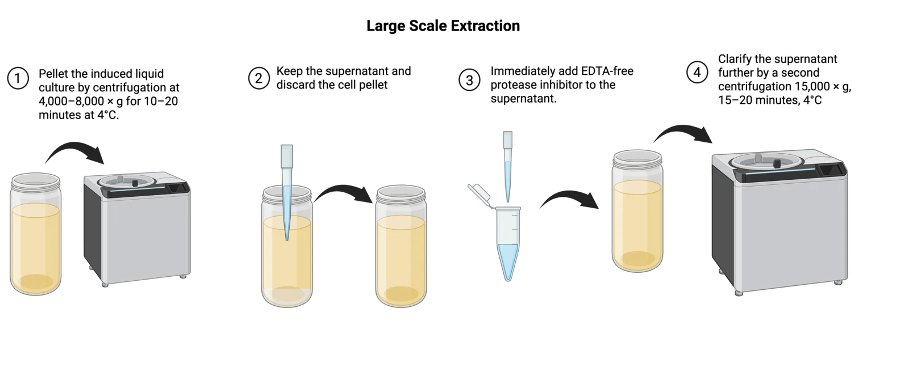
Figure 15. Large scale, harvesting the secreted fraction.
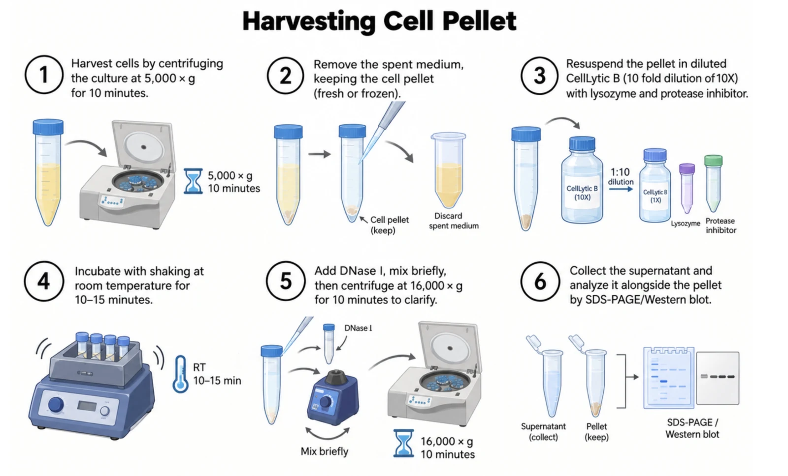
Figure 16. Large scale lysis of the cell pellet.
Protein purification
Pull the His-tagged protectant out of a clarified extract on a nickel column, then dialyse the imidazole and the salt back out so it can be sprayed on a plant.
Bench timeColumn 1 h 30 min; dialysis 4 h plus overnight
Output3 mL eluate, dialysed into PBS, stored at −80 °C
Ran forNo result on this wiki
Materials
Clarified extract from an induced His-tagged expression culture
HisPur Ni-NTA purification kit with spin columns [4]
10× PBS, which is 200 mM sodium phosphate and 3 M NaCl at pH 7.4
2 M imidazole, pH 7.4
Slide-A-Lyzer G3 dialysis cassette, 10K MWCO, 3 mL [4]
4.8 L of 1× PBS at pH 8, in three 2 L beakers, stir plate, ice
1 M MES buffer pH 5.0, NaCl and 20% ethanol for column regeneration
Buffers, 50 mL each
Buffer
Imidazole
10× PBS
2 M imidazole
Water
Equilibration
10 mM
5 mL
250 µL
44.75 mL
Wash
25 mM
5 mL
625 µL
44.375 mL
Elution
150 mM
5 mL
3,750 µL
41.25 mL
Column
Spin the Ni-NTA column at 175 × g for 2 min to drive off the storage buffer.
Add 6 mL of equilibration buffer.
Bring the extract to the loading imidazole concentration before it goes on: 237.5 µL of 2 M imidazole into a 47.5 mL supernatant, or 62.5 µL into a 12.5 mL supernatant.
Load the whole extract onto the column, running it down the walls so the resin is not disturbed.
Add 6 mL of wash buffer and discard the flow-through. Repeat three times, and keep the flow-through from the third wash to load on a gel.
Spin at 175 × g for 2 min.
Collect the flow-through from the last wash.
Add 3 mL of elution buffer.
Spin at 175 × g for 2 min.
Collect the flow-through. This is the purified protein.
Dialysis
Make 1× PBS by mixing 160 mL of 10× PBS with 1.6 L of deionised water.
Adjust to pH 8.
Top up to 1.6 L and cover the beaker with plastic wrap. Prepare three beakers this way.
Open the cassette by twisting the cap anticlockwise.
Load the extract, withdrawing the pipette slowly as you dispense. Do not overfill.
Press the membrane gently between gloved thumb and forefinger on both sides at once to drive out air, then fit the cap.
Lock the cap clockwise until the arrows line up and it stops firmly.
Stir in 1.6 L of 1× PBS on ice for 2 h.
Change the PBS and stir on ice for another 2 h.
Change the PBS again and stir on ice overnight.
Transfer the dialysed protein to 1.5 mL tubes.
Store at −80 °C.
Column regeneration
Make 50 mL of regeneration buffer: 1 mL of 1 M MES pH 5.0 and 0.2922 g of NaCl, topped up to 50 mL with deionised water.
Pass 30 mL of regeneration buffer through the column, which is ten resin volumes, and discard the flow-through.
Pass 30 mL of deionised water through and discard the flow-through.
Add 15 mL of 20% ethanol and seal the column.
Store at 4 °C.
Notes
Three buffer changes over about sixteen hours is what takes 150 mM imidazole down to a concentration a seedling will tolerate, and a protein that goes onto a plate without that step is a salt treatment with a protein in it. The column and the regeneration are both written down, and no purified protein from either appears anywhere on this wiki. What was sprayed on plants in August came from culture supernatant.
SDS-PAGE
Separate a protein sample by molecular weight, which is the readout for every question in this section and the first half of a Western blot.
Bench time45 min to cast and set, about 1 h to run, 2 h to stain and destain
OutputOne stained gel, or one gel ready for transfer
Ran forThe August gels on Engineering
Materials
Resolver A and Resolver B solutions
Stacker A and Stacker B solutions
TEMED and freshly made 10% APS
6× Laemmli buffer, stored at 4 °C
Protein ladder, stored at −20 °C
Cassettes, combs, heat block, power supply
Gel recipe, per gel
Component
Stacker, top gel
Resolver, bottom gel
Resolver A
–
4 mL
Resolver B
–
4 mL
Stacker A
1.5 mL
–
Stacker B
1.5 mL
–
Total volume
3 mL
8 mL
TEMED
3 µL
4 µL
10% APS
15 µL
40 µL
Procedure
Mix equal volumes of Resolver A and Resolver B.
Add TEMED and fresh 10% APS to the resolver at the rates above and mix thoroughly. Pour it and let it set.
Mix equal volumes of Stacker A and Stacker B.
Add TEMED and fresh 10% APS to the stacker and mix thoroughly.
Pipette the stacker straight down the middle of the cassette up to the top of the short plate, smoothly enough that it does not mix into the resolving layer.
Seat the comb into the alignment slots slowly so no bubbles are trapped under the teeth.
Leave the gel undisturbed for 30 to 45 min to polymerise.
Combine 5 to 15 µL of protein supernatant with 6× Laemmli buffer to a total of 20 µL.
Combine 5 µL of ladder with 1 µL of 6× Laemmli buffer.
Heat every tube at 95 °C for 10 min in a heat block.
Spin the tubes briefly to collect the liquid before loading.
Load 2 to 3 µL of ladder into both the first and the last well. Put samples in the middle wells and fill any unused well with 1× Laemmli buffer so neighbouring bands do not spread into it.
Run at a constant 200 V for 10 min, until the tracking dye has left the stacker and entered the resolving gel.
Drop to a constant 120 V and run 45 to 60 min more, until the dye front approaches the bottom.
Coomassie staining
Solution, 50 mL
Component
Percent
Volume
Stain
Coomassie Brilliant Blue R-250
0.05
0.025 mL
Methanol
50
25 mL
Acetic acid
10
5 mL
ddH2O
39.95
19.975 mL
Destain
Methanol
30
15 mL
Acetic acid
10
5 mL
ddH2O
60
30 mL
Make up 50 mL each of stain and destain to the table above.
Put the gel in a plastic container and wash with ddH2O on an orbital shaker three times, 5 min per wash, to clear residual SDS.
Stain in 0.05% Coomassie R-250 for 1 h on the shaker.
Replace the stain with destain and shake for at least 1 h, until the bands stand out against a clear background.
Notes
APS has to be made fresh. An old 10% APS gives a gel that never sets properly and a run that smiles across the lanes. Ladder in both the first and the last well is what let the 24 August membrane be assigned a molecular weight at all, and that blot is the reason the habit is written into the protocol.
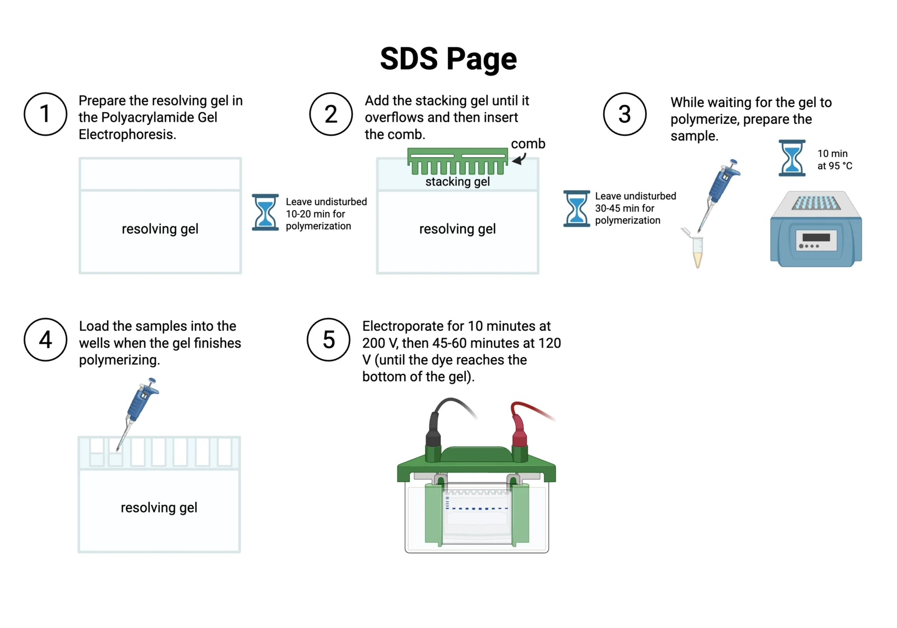
Figure 17. Casting, loading and running an SDS-PAGE gel.
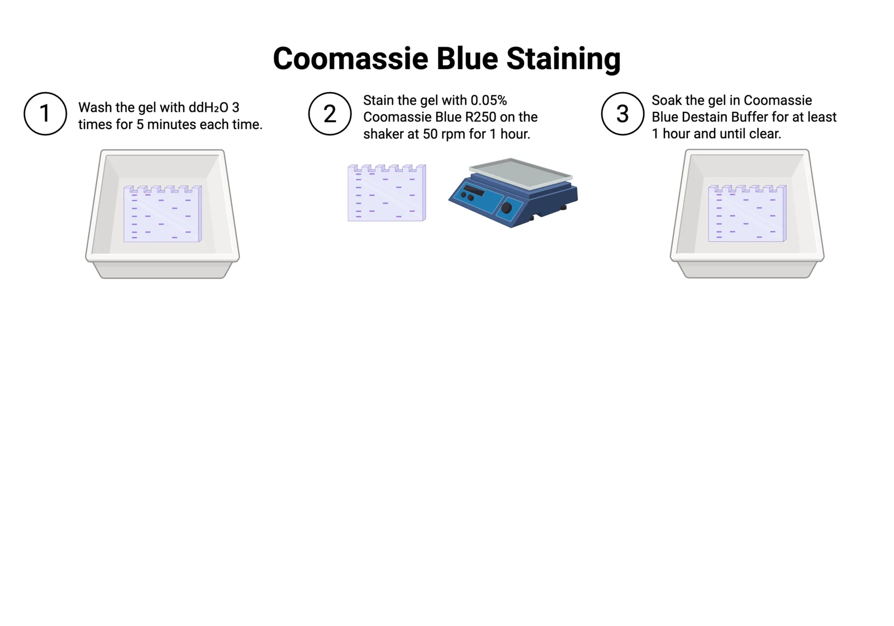
Figure 18. Coomassie Blue staining and destaining.
Western blotting
Ask whether a specific protein is in a lane, which a Coomassie gel cannot answer for a low-abundance secreted product.
Bench timeTwo days: gel and transfer on day one, antibody overnight, detection on day two
OutputA chemiluminescent exposure of the membrane
Ran for2, 7 and 24 August 2026
Materials
SDS sample and loading buffer
PVDF membrane, 100% methanol, 1× transfer buffer, 3M filter paper
5% non-fat milk in 1× TBST
Primary and secondary antibody
ECL reagents A and B
Gel
Prepare protein samples in SDS sample buffer.
Denature at 95 °C for 5 to 10 min.
Spin down briefly to collect condensation.
Load 30 to 50 µg of total protein per well.
Run the stacker at 80 to 120 V until the samples enter the resolving gel, then raise to 100 to 200 V until the dye front reaches the bottom.
Transfer
Soak the PVDF membrane in 100% methanol for 1 min, then in 1× transfer buffer for 3 min.
Soak the gel in 1× transfer buffer for 5 min.
Pre-wet the 3M filter papers in 1× transfer buffer.
Assemble the sandwich and run the transfer.
Blocking, antibody and detection
Block in 5% non-fat milk at room temperature for 1 h.
Incubate with primary antibody overnight at 4 °C with continuous agitation.
Wash three times in 1× TBST.
Incubate with secondary antibody for 1 h at room temperature with continuous agitation.
Wash five times in 1× TBST.
Mix ECL reagents A and B 1:1.
Spread the mixed ECL evenly over the membrane and expose.
Notes
Three blots were run, on 2, 7 and 24 August. Only the 24 August membrane has a ladder that resolves well enough to assign a weight, and what it shows is a single band at about 41 kDa in the 18 August lane with nothing in the 23 August lane, which is the culture that was actually sprayed onto plants. The result and the bubble artefact above the band are discussed on Engineering. A bubble under the membrane during transfer is the failure mode this protocol is most exposed to, and rolling the sandwich rather than pressing it is the fix.
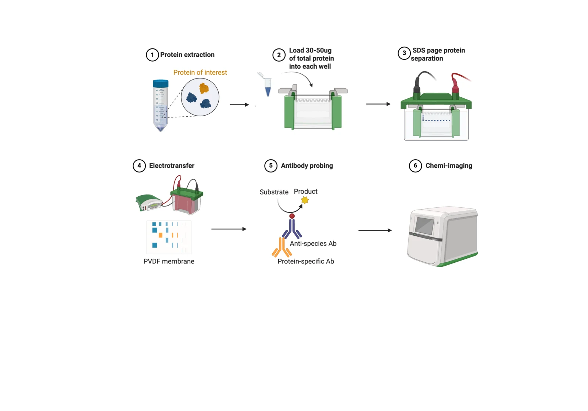
Figure 19. Western blotting, gel through detection.
Plant protocols
Three ways to grow Arabidopsis thaliana and put a measured dose of stress on it. Plates are the workhorse, because a vertical square plate lets root length be photographed every day without touching the plant. Soil is closer to a field and much harder to dose evenly. Hydroponics sits between the two and was built so that the medium, and therefore the salt, can be changed under a growing plant without disturbing it.
Every plate protocol on this page uses the same seed template, so plants from different experiments are spaced and imaged identically.
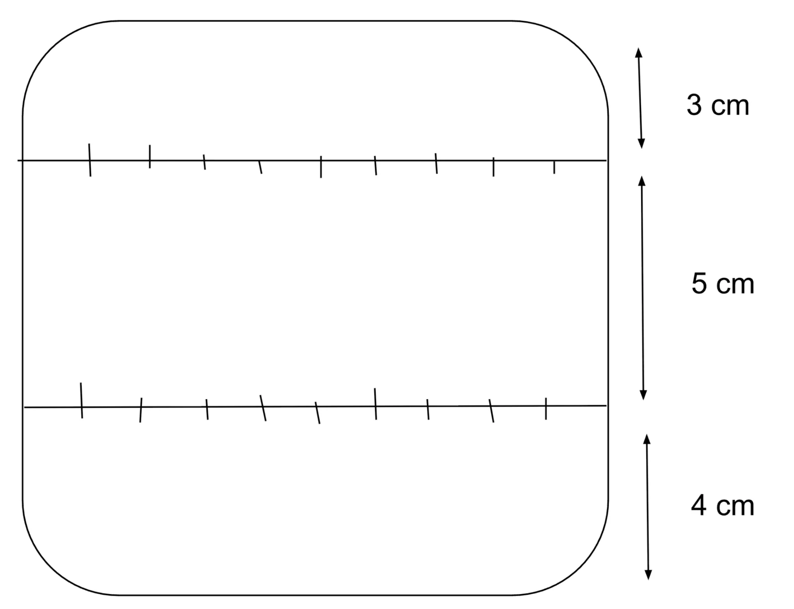
Figure 20. The seed template used on every square plate: eighteen seeds in two rows of nine, the first row 3 cm from the top, the rows 5 cm apart, 4 cm of plate below the second row.
Arabidopsis in soil
Raise plants from sterilised seed to a treatable rosette in a 3-inch pot, and keep untreated plants going for seed.
Bench time10 days to a transplantable seedling, about 3 weeks more to treatment
OutputPotted plants, and seed from the untreated ones
Ran forThe soil planting progression record
Materials
75% and 95% ethanol
½ MS square plates
Bleach, for optional pot sanitisation
Peat soil, autoclaved
3-inch pots and water trays, transparent lids
Hyponex No. 2 fertiliser (花宝2號)
Bamboo stakes, 200 µL tips, orchid clips
Sterile ddH2O
Sterilisation and germination
Sterilise seed in 75% ethanol for 2 min, then add 95% ethanol and let the seed air-dry under sterile conditions.
Sow the dry seed on square plates of ½ MS.
Cold treat at 4 °C in the dark for 3 days.
Move to white light and grow the plates vertically for 7 days.
Soil and pots
Optionally sanitise pots and trays by soaking in 1:100 bleach for 10 min, then rinsing repeatedly until no bleach smell is left. Do this in a hood.
Mix peat soil and autoclave it.
Fill each 3-inch pot to about 80% full, pressing lightly, then water the surface until the whole soil body is wet.
Transplanting
Make a hole about one knuckle deep in the centre of the soil with a finger. For more than one seedling per pot, space the holes evenly.
Select one uniform, healthy, 7-day-old seedling and lift it with tweezers from beneath the cotyledons. Never clamp the seedling itself.
Lay the root against the sidewall of the hole.
Wash soil over the roots with a wash bottle so they are covered naturally. Do not touch the root system with tweezers or fingers.
Acclimatisation and care
Stand the pots in a tray with about 0.5 cm of water, so the pot bottoms are submerged.
Cover with a transparent lid and step the humidity down over three days: day 1 fully sealed, day 2 slightly open, day 3 uncovered for air circulation.
Water on a dry and wet cycle set by the chamber humidity. The surface should dry, but never for more than a day.
Alternate water and fertiliser with each watering. Dilute Hyponex No. 2 at 1:1,000.
Water and fertilise from the tray. Water the surface only when the soil is too dry to take up water from below.
Treatment, support and seed
Apply protectant or stress treatment at about 3 weeks after transplanting. Two to four weeks is workable depending on growth, and treatment should start no later than four weeks to stay ahead of bolting and growth arrest.
Photograph daily to find the right starting point.
Once the inflorescence reaches 20 cm, push a bamboo stake into the soil. Cap the sharp end with a 200 µL tip first so it does not sit against wet soil and grow mould.
Clip the inflorescence to the stake with orchid clips to stop it falling over, without damaging the stem.
For untreated plants kept for seed: siliques start drying about 1.5 months after transplanting, so cut back the watering then.
When 80% of the siliques are dry, stop watering entirely and let the plant dry fully before collecting seed.
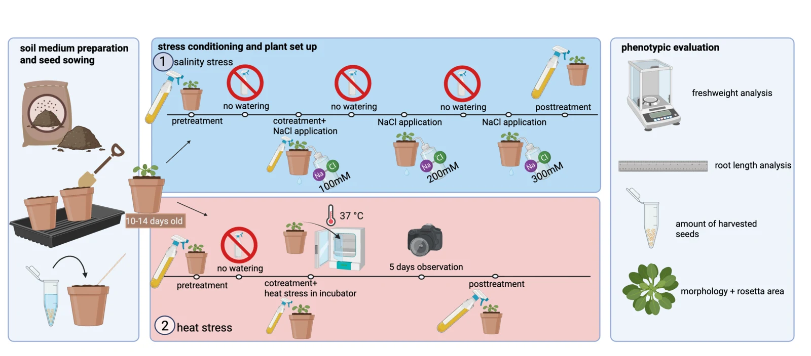
Figure 21. The soil experiment as designed. The stress arms drawn here are covered by fix E7 above; the growth and cultivation half is the protocol on this page.
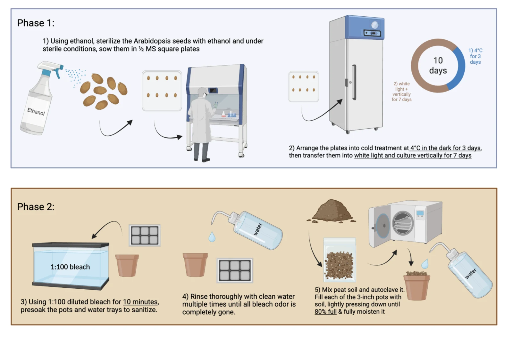
Figure 22. Sterilisation and germination.
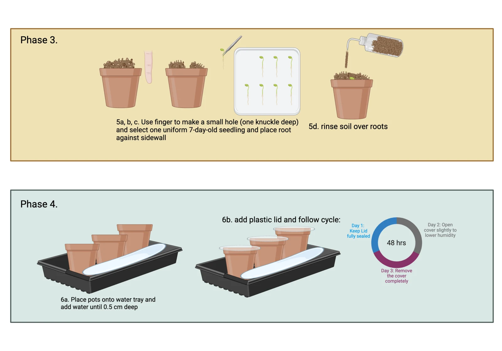
Figure 23. Transplanting into soil.
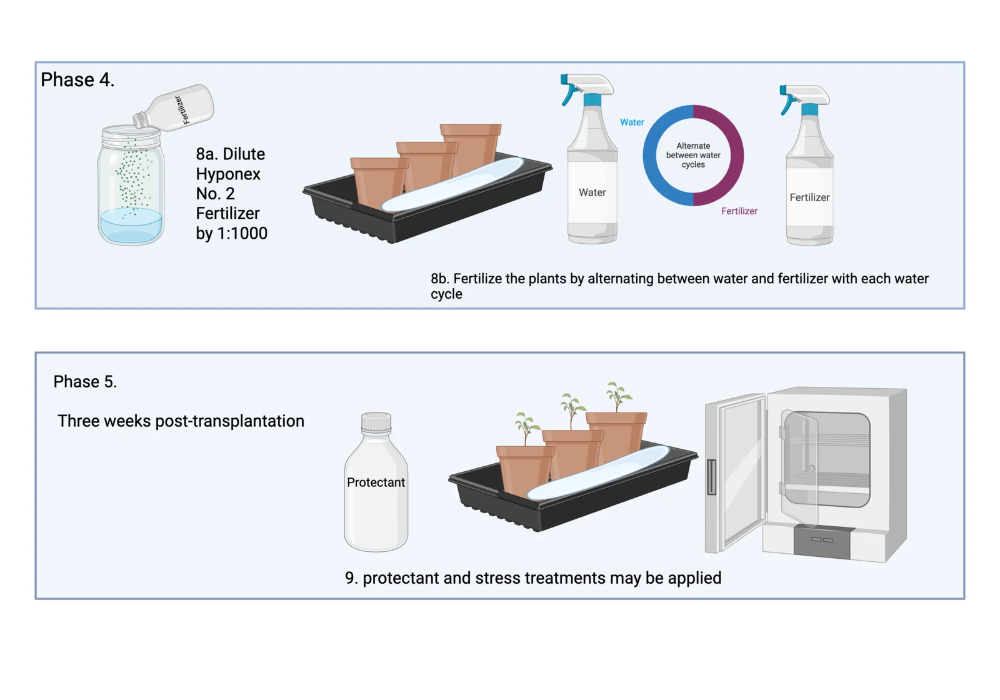
Figure 24. Acclimatisation, feeding and seed harvest.
Salinity stress on agar
Put a known salt dose on seedlings growing on vertical plates, with trehalose as the candidate protectant, and photograph the root every day for ten days.
Bench time18 days end to end: 4 vernalisation, 4 germination, 10 observation
Stir on a hot plate until nothing is left undissolved.
Check the pH with the probe and bring it to 5.7 to 5.8 with KOH.
Foil the neck of the flask and stick an autoclave indicator on it.
Autoclave at 127 °C for 20 min and wait for the pressure to reach zero before opening.
While it autoclaves, label the petri dishes in the cabinet. Date and an up arrow in the top right corner, so the photographs all have the same orientation.
Take half the flasks into the cabinet and hold the rest in a water bath so they do not set.
Dry the outside of each flask with a paper towel before spraying it with 70% ethanol.
Pour about 50 mL into each square dish, then bring in the second half of the flasks and pour those.
Let them set flat in the cabinet.
Sowing and vernalisation
In the cabinet, use the seed template in Figure 20 to sow 18 seeds per plate in two rows of nine.
Seal each plate with breathable tape.
Label the vernalisation date and wrap the plates in foil.
Vernalise at 4 °C for 4 days.
Move to the growth chamber for 4 days.
Treatment plates, 600 mL for 12 plates
Twelve conditions, crossing four trehalose levels with three salt levels: 0, 1, 5 and 10 mM trehalose against no NaCl, 150 mM and 250 mM.
Ingredient
Amount
½ MS medium powder, without sucrose
1.38 g
MES buffer
0.3 g
Distilled water
600 mL
Sucrose, 1%
6 g
Agar powder, 1%
6 g total, added as 0.5 g per 50 mL flask
Combine the MS powder, MES, water and sucrose in a 2,000 mL beaker and stir on a hot plate until clear.
Bring the pH to 5.7 to 5.8, raising it slowly with 0.1 M KOH if it is low.
Split into three flasks of 200 mL and label them 0 mM, 150 mM and 250 mM.
Add 2.192 g of NaCl to the 150 mM flask and 3.652 g to the 250 mM flask. See fix E8 below before you weigh.
Set up four trehalose levels: 0, 1, 5 and 10 mM.
Split into twelve flasks of 50 mL, one per condition, and label each clearly.
Add trehalose to each flask at the volumes in the table below.
Add 0.5 g of agar to each flask.
Foil the necks, add indicator tape, autoclave at 127 °C for 20 min, and wait for zero pressure.
Label the dishes while the flasks autoclave: date and up arrow top right, trehalose and NaCl concentration on the bottom lid.
Pour about 50 mL per dish, holding the flasks you are not pouring in a hot bath so they do not set.
Let them set flat in the cabinet.
Trehalose in plate
Volume added per 50 mL
0 mM
0 µL
1 mM
500 µL
5 mM
2,500 µL
10 mM
5,000 µL
Transferring seedlings
Take the foil-wrapped plates out and spray them with alcohol before they go into the cabinet.
Rule a straight line 3 cm from the top of the plate using the seed template.
Mark eight dots along it, where the root tips will go.
Stand the square plates vertically at a slight angle.
Choose eight germinated seedlings with similar root length and line their root tips up on the ruled line.
Seal with breathable tape, label the transfer date, and rack the plates vertically in the growth chamber, tilted slightly back.
Recording
Observe for 10 days.
Set up the black-background platform and turn the lights on.
Bring the plates out one at a time and lay them on the platform with the bottom lid facing up.
Photograph so the labels are legible, with no reflections and no condensation over the plants.
Put each plate back on the rack, tilted slightly back.
At the end of the run, weigh the fresh weight and take the plants into chlorophyll extraction.
Notes
The trehalose stock is not named on the sheet. The four volumes are all consistent with a 0.1 M stock, which is the reading used here.
The sheet says to label eight petri dishes for twelve conditions. Label twelve.
Trehalose is the candidate protectant in this design, and the project never validated it as a positive control. Six sets were run and none of them gives a reliable rescue. Treat the trehalose arms as an untested comparator.
Eighteen seeds are sown per vernalisation plate and only eight are moved onto a treatment plate. Choosing on root length at transfer is what makes day-one comparable across conditions.
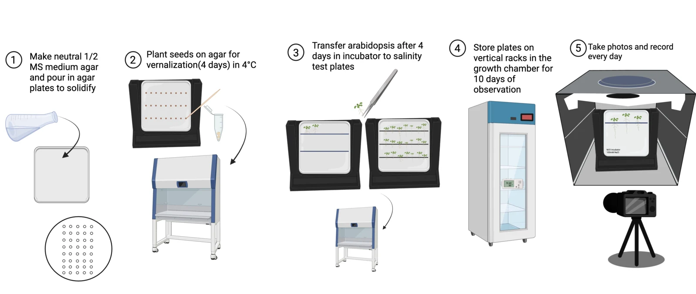
Figure 25. The agar workflow, plate to camera.
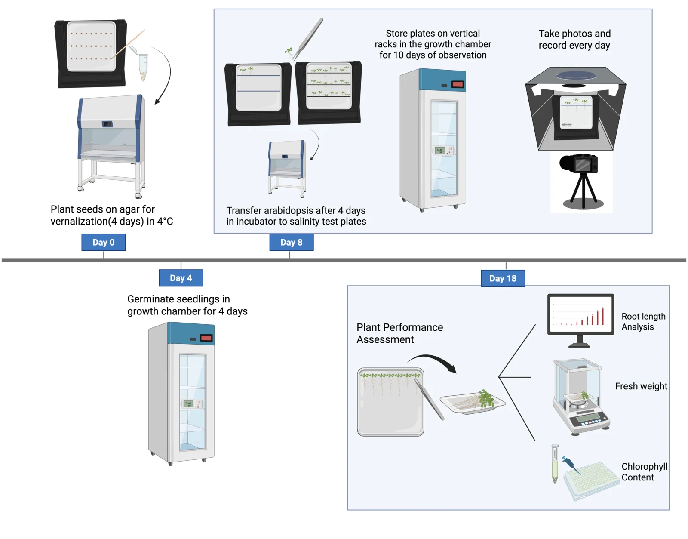
Figure 26. The salinity run as a calendar. Day 0 sowing and vernalisation, day 4 germination, day 8 transfer onto treatment plates, day 18 harvest into the three readouts.
Salinity stress on hydroponics
Grow seedlings with their roots in liquid medium, so the salt dose can be changed under a living plant at a chosen moment without lifting it.
Bench time4 days stratification, 4 to 7 days germination, then weeks of observation
OutputPlants in a shared medium, sampled for chlorophyll and fresh weight
Ran forThe hydroponic salinity record and its chlorophyll sheet
Materials
½ MS medium powder without sucrose, MES buffer, sucrose, agar powder
500 mL flask, 2,000 mL beaker, hot plate, stir bar, pH meter, aluminium foil
Seed holders
Cut the lids off 1.5 mL microtubes.
Punch a hole in the centre of each lid with a leather punch.
Put the lids in a small beaker, foil it and add indicator tape.
Autoclave at 127 °C for 20 min and wait for zero pressure.
Germination agar, 250 mL
Ingredient
Amount
½ MS powder, without sucrose
0.575 g
MES buffer
0.125 g
Distilled water
250 mL
Sucrose, 1%
2.5 g
Agar powder, 1%
2.5 g
Combine the MS powder, MES, water and sucrose in a 500 mL flask.
Stir on a hot plate until nothing is left undissolved.
Bring the pH to 5.7 to 5.8, raising it with 0.1 M KOH if it is low.
Add the agar powder.
Foil the neck, add indicator tape, autoclave at 127 °C for 20 min, wait for zero pressure.
Sowing into the holders
Prepare 48 lids.
Add 250 µL of agar into each lid and let it set.
Soak the tube rack in bleach for 10 min, then rinse with ddH2O until no bleach smell is left.
Fill 48 wells of the rack with 2 mL of 0.1× MS medium.
Seat the lids on the wells with tweezers.
Place one seed onto the agar through the hole in each lid, using an autoclaved toothpick moistened first.
Wrap the rack in foil.
Stratify at 4 °C for 4 days.
Move the rack into an incubator under light at 22 °C and 40 to 45% humidity. Seedlings germinate over 4 to 7 days and then enter the growth stage.
Change the medium about every one to two weeks to keep contamination and mould down.
Salt stock, 3 M NaCl in ½ MS
Ingredient
Amount
½ MS powder, without sucrose
0.92 g
MES buffer
0.2 g
Distilled water
400 mL
NaCl
70.128 g
Combine the MS powder, MES and water in a 500 mL flask and stir until clear.
Bring the pH to 5.7 to 5.8 with 1 M KOH.
Add the NaCl slowly in batches, stirring until all of it is dissolved.
Foil the neck, add indicator tape, autoclave at 127 °C for 20 min, wait for zero pressure.
Dose the growth medium from this stock to the salt concentration the run calls for.
The two runs as they were carried out
The sheet stops at the salt stock, so the treatment schedule below comes from the run records and not from the protocol. Both runs use four boxes and the same four-arm timing design.
Arm
Set 1, salinity
Set 2, heat
Box 1
Control
Control
Box 2
Protectant 3 days before salt
Protectant before
Box 3
Protectant on the day of salt
Protectant on the day
Box 4
Protectant 3 days after salt
Protectant after
Set 1 applied 100 mM NaCl to 13-day-old plants and ran from 25 July to 4 August 2026. Chlorophyll was read once per box, so n = 1 per arm. Set 2 replaced the salt with heat and took three technical replicates of the absorbance, still on one box per arm. Set 2’s temperature, duration and plant age were never written down; see fix E11.
Notes
Stratifying all 48 holders together is what makes the plants comparable: without it, germination is staggered by several days and the salt dose lands on plants of different ages. The medium change every one to two weeks is the maintenance step that decides whether the run reaches the end, because a contaminated box loses every plant in it at once.
Functional assays
Two protocols that turn a treated plant into a number. Chlorophyll extraction is the destructive endpoint for every plate run on this page. The heat stress test is a second stress axis, used with a commercial peptide to ask whether the timing of a spray matters at all before asking whether our own protectants work.
Chlorophyll extraction
Convert a harvested plate of seedlings into total chlorophyll, which is the readout most sensitive to salt and heat damage in this system.
Bench time1 h 30 min including freezing and extraction
OutputTotal chlorophyll a plus b, in mg per g fresh weight
Ran forAgar sets 4 to 8 and both hydroponic runs
Materials
Agar plates with treated plants
Tweezers, tissue paper, weighing plate
15 mL centrifuge tubes, marker
Stainless steel beads, ten per tube
Acetone, diluted to 80%
Vortex
96-well plate and an ELISA plate reader
Procedure
Lift every plant off the plate at once with tweezers, in a single motion, holding below the leaf area and without squeezing.
Lay the plants on tissue paper and press lightly to take off the agar. Do not press the leaves hard.
Put the plants on a weighing plate and record the fresh weight, one plate of plants at a time.
Move them into a 15 mL centrifuge tube, roots included.
Label the tube with the group concentration and its fresh weight.
Repeat for every condition.
Add ten stainless steel beads to each tube and hold at −80 °C for 10 min.
Dilute acetone to 80% and add 4 mL to each tube.
Let the chlorophyll extract, vortexing or shaking hard to break the tissue up. It is done when the plants are no longer green.
Write down which sample goes in which well before loading anything. This is the step that loses runs.
Load 200 µL per well, three technical replicates per sample.
Blank on 200 µL of 80% acetone.
Read the plate at 663 nm and 645 nm.
Calculation
Total chlorophyll, in mg per g fresh weight, from Arnon's coefficients for 80% acetone [1]:
where A663 and A645 are the blank-subtracted absorbances, V is the extraction volume in mL and fresh weight is in g.
Notes
Dividing by fresh weight inverts the comparison in a salt experiment, because a salt-stressed group weighs far less than its control and the division inflates it. Report the un-normalised absorbance alongside the normalised value, or state plainly which one a figure is using. The Plants page carries this the same way.
The BioRender figure numbers two consecutive steps as 7. It is left as drawn, because retouching a figure to fix a label is worse than saying so here.
Ten beads and −80 °C for 10 min is what lets a vortex break the tissue. Warm plants smear instead of shattering and the extraction takes an hour longer.
Check the absorbance against the linear range before trusting it. Experiment 7 trial 3 returned OD663 readings above 2.2, well outside it, and all twelve arms on that plate come back at 17 to 18 mg/g whatever the treatment. Dilute the extract in 80% acetone and read again when a well saturates. The linear range of the reader is on Measurement.
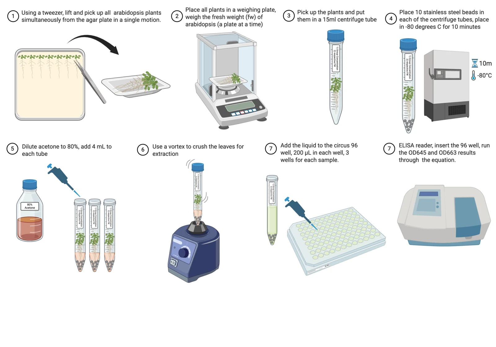
Figure 27. Chlorophyll extraction, harvest to plate reader. The two steps labelled 7 are as drawn; see the note above.
Heat stress on agar
Ask whether spraying a protectant before, during or after a heat event changes the outcome, using a commercial peptide as the test article.
Ran for15 August 2026 and the 13 August horizontal-plate trial
Materials
½ MS medium powder, MES buffer, sucrose, agar powder, distilled water
CH Biotech peptide (富肽二號)
Sterile ddH2O, 50 mL centrifuge tube, hand sprayer
500 mL flask, stir bar, pH meter, aluminium foil
Square petri dishes, breathable tape, tweezers
Incubator at 37 °C under white light, rack, thermometer
Vernalisation plates, 200 mL for 4 plates
Ingredient
Amount
½ MS medium powder
0.46 g
MES, 0.5 g/L
0.1 g
Distilled water
200 mL
Sucrose, 1%
2.0 g
Agar powder, 1%
2.0 g
Combine in a 500 mL flask and stir on a magnetic stirrer until nothing is left undissolved.
Bring the pH to 5.7 to 5.8 with KOH.
Foil the neck, add indicator tape, autoclave at 127 °C for 20 min, and wait for zero pressure.
Label the dishes during the autoclave: date and an up arrow in the top right.
Take half the flasks into the cabinet and hold the rest in a hot bath.
Dry each flask with a paper towel before spraying it with 70% ethanol.
Pour about 50 mL per dish, then bring in and pour the second half.
Let them set flat in the cabinet.
Sowing and germination
Sow 18 seeds per plate in two rows of nine, using the template in Figure 20.
Seal with breathable tape and label the vernalisation date.
Wrap the plates in foil and vernalise at 4 °C for 4 days.
Move to the growth chamber for 7 days to germinate.
Transferring seedlings
Spray the plates with alcohol before they go into the cabinet.
Rule a line 5.5 cm from the top of the plate using the template.
Stand the plates vertically at a slight angle.
Pick 12 germinated seedlings of similar root length and line their root tips up on the ruled line. Four plates, one per group: control, pre-treatment one day before, co-treatment on day 0, and after-treatment one day after.
Seal with breathable tape, label the transfer date, and rack the plates in the growth chamber, tilted slightly back.
Applying treatments
One day before the heat event, dilute the CH Biotech peptide 1:500 in a 50 mL tube: 19.96 mL of sterile ddH2O and 40 µL of peptide.
Fit a sprayer to the tube.
Take out the pre-treatment plate, stand it vertically, and spray the plants from leaves to roots from 15 cm away, about two sprays, so every plant is wetted.
Reseal with breathable tape and return it to the growth chamber.
On day 0, spray the co-treatment plate the same way from the same distance.
Reseal it.
Rack all four plates, tilted slightly, and put the whole rack into the incubator at 37 °C under white light for thermopriming.
Leave the seedlings in the incubator for another 5 days.
One day after thermopriming, take out the after-treatment plate, spray it the same way, reseal, and put it back in the incubator.
Recording
Observe for 6 days from pre-treatment.
Set up the black-background platform under white light.
Bring the plates out one at a time and photograph them, keeping labels legible and avoiding reflections and droplets.
Return each plate to the chamber, tilted slightly back.
After 6 days, harvest and take fresh weight and chlorophyll.
Notes
The test article is a commercial product, not a ReLeaf protectant. The experiment asks whether timing matters at all for a foliar spray under heat, which is a question worth answering with material that definitely works before spending our own on it. LEA14 and BoPep4 have never been applied to a plant in any experiment on this project.
The dilution is written as 19.96 mL plus 40 µL, which is 1:500 in a round 20 mL. Make it in the tube you will spray from.
Spray distance and count are part of the dose. Two sprays from 15 cm is what was run; changing either changes the treatment.
This run exists in the archive as five slides of photographs, 16 to 21 August. Its only numbers are in the chlorophyll sheet named below, which carries both the problems in fixes E12 and E15.
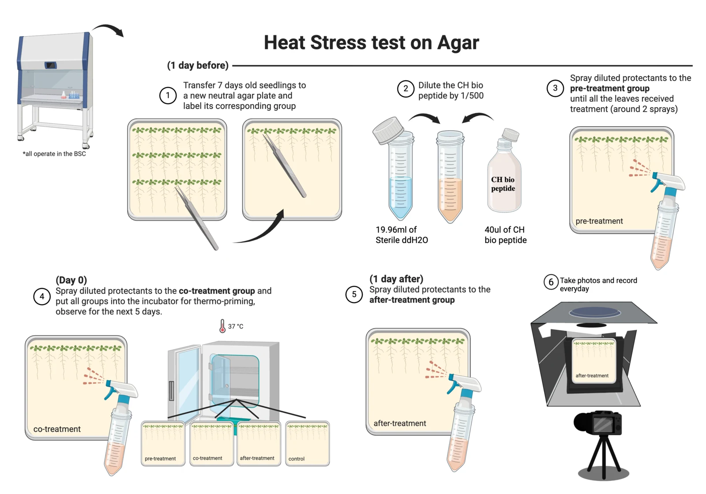
Figure 28. Heat stress on agar, with the four treatment-timing groups.
Protocols held elsewhere
Three pieces of written method sit next to these sheets in the same folders and belong on other pages, so they are pointed at here and written there.
OD600 calibration.SiO2_OD600_Experiment_SOP.pdf is a five-page SOP for building a particle concentration against OD600 regression by cumulative titration of a monodisperse silica suspension, cross-calibrating two inline photometers in a recirculating loop against a benchtop instrument. It covers the van de Hulst scattering estimate, the sample-then-spike concentration recursion and the multiple-scattering ceiling above OD 1.0. That is measurement methodology and its calibration, and it lives on Measurement.
Bioreactor operation. Perfusion set-up, membrane, flow rates and sampling are on Hardware → Bioreactor, with the derived parameters on Bioreactor Calculations.
Safety. Organism risk group, containment, waste handling and the decontamination route for everything on this page are on Safety and Security. Nothing on this page is a safety claim.
Three arms of the programme drawn in Figure 1 have no protocol at all, here or anywhere, because they were never run: the light plate apparatus induction test, the ELISA protectant activity assay, and the hay infusion medium screen. Nothing on this wiki shows PcpcG2 output changing with green light, so every statement about the light switch is design intent.
References
Arnon DI. Copper enzymes in isolated chloroplasts. Polyphenoloxidase in Beta vulgaris. Plant Physiology 1949;24(1):1–15. The source of the 8.02 and 20.20 coefficients and of the 663 and 645 nm wavelengths used in the chlorophyll calculation.
Bradford MM. A rapid and sensitive method for the quantitation of microgram quantities of protein utilizing the principle of protein-dye binding. Analytical Biochemistry 1976;72:248–254.
Viogene. Mini Plus Plasmid DNA Extraction System handbook. Buffer names MX1, MX2, MX3, WN and WS follow the kit.
Sigma-Aldrich. CelLytic B Cell Lysis Reagent product information. Lysozyme, protease inhibitor and DNase I ratios follow the supplier's recommendation.
Bio-Rad. Gene Pulser Xcell Electroporation System instruction manual.
This page is a draft with sixteen fixes open.
E1 two numbers in the agar sheet are wrong or unitless; E2 the Golden Gate
molar volume formula is garbled; E3 the WB800 electroporation column was
never run; E4 two antibiotic stock concentrations are blank; E5 the
Bradford well volumes do not add up; E6 the Western blot materials list is
empty; E7 the soil stress schedule has no written protocol and the
treatment age is given twice; E8 the salinity NaCl masses are weighed for
250 mL and added to 200 mL; E9 the day-six 150 mM root
length is given as 1.8 and as 1.36 mm; E10 two hydroponic rigs are
written up as one protocol; E11 the hydroponic protectant is never named
and set 2's conditions block is empty; E12 the chlorophyll formula
reads 633 in nine sheets where the protocol reads 663; E13 the chlorophyll
extraction volume is given three ways; E14 a second chlorophyll method at
649 and 665 nm was used and never written down; E15 the two
chlorophyll workbooks compute different answers from the same
absorbances; E16 the heat stress control row has OD645 and OD663 swapped.
Delete each fix box as it is resolved, and delete this box when none are
left.